Jason
ตัวน้องแบบเส้นพันกัน เคลื่อนไหวด้วย CSS ใน SVG ทุกอารมณ์อยู่ในโฟลเดอร์ moods/
สถานะทั้งหมด
ตัวเดียวกันแต่ติดชื่อโมเดล
รันด้วย --badge "Opus 5.5" ได้ ไม่ใช้โลโก้ของบริษัทอื่นในค่าเริ่มต้น (ดูหมายเหตุด้านล่าง)
หมายเหตุ: ถ้าจะใช้โลโก้ของ ChatGPT หรือบริษัทอื่น ต้องตรวจเงื่อนไขการใช้แบรนด์ก่อน โดยเฉพาะตอนแจกเป็น open source
แนะนำให้ใช้ป้ายชื่อโมเดลเป็นข้อความ หรือให้ผู้ใช้แต่ละคนใส่โลโก้เองในเครื่องของตัวเอง